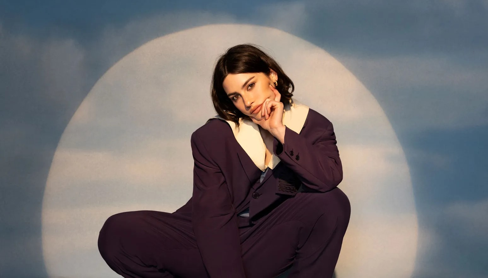

เพลงที่ 7 That’s So True - Gracie Abrams
คลิกที่ภาพเพื่อฟังเพลง
เพลงนี้สื่อถึงความรู้สึกเศร้าและผิดหวังหลังจากความสัมพันธ์ที่ไม่เป็นไปตามคาดหวัง โดยเธอเล่าถึงการพยายามมองโลกในแง่ดี
ทั้งที่ในใจยังเจ็บอยู่ เพลงนี้เต็มไปด้วยความเปราะบาง ซื่อสัตย์ และการยอมรับความจริงที่เจ็บปวดในความรัก แม้จะเป็นเพลงเศร้า
แต่ทำนองและจังหวะดันตรงกันข้าม ทำให้ติดหูใครหลายๆคน เนื่องจากไม่ทำให้เพลงนี้ดิ่งจนเกินไป
เพลงที่ 8 Beatiful Things - Benson Boone

คลิกที่ภาพเพื่อฟังเพลง